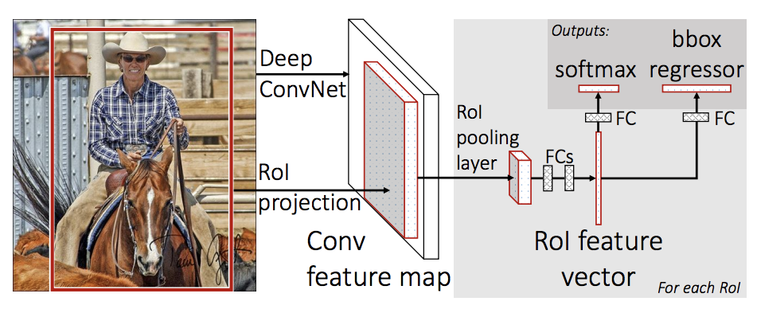

备注
点击此处下载完整示例代码
TorchVision 目标检测微调教程 ¶
创建于：2025 年 4 月 1 日 | 最后更新：2025 年 4 月 1 日 | 最后验证：2024 年 11 月 5 日
在本教程中，我们将对预训练的 Mask R-CNN 模型进行微调，以在 Penn-Fudan 数据库上进行行人检测和分割。该数据库包含 170 张图片和 345 个行人实例，我们将用它来说明如何使用 torchvision 的新特性来在自定义数据集上训练目标检测和实例分割模型。
备注
本教程仅适用于 torchvision 版本>=0.16 或 nightly 版本。如果您使用的是 torchvision<=0.15 版本，请参考此教程。
定义数据集 ¶
训练目标检测、实例分割和人体关键点检测的参考脚本允许轻松支持添加新的自定义数据集。数据集应继承自标准 torch.utils.data.Dataset 类，并实现 __len__ 和 __getitem__ 。
我们所需的最具体要求是数据集 __getitem__ 应返回一个元组：
image:
torchvision.tv_tensors.Image，形状为[3, H, W]，一个纯张量，或一个大小为(H, W)的 PIL Imagetarget: 包含以下字段的字典
boxes，torchvision.tv_tensors.BoundingBoxes，形状为[N, 4]：N边界框在[x0, y0, x1, y1]格式中的坐标，范围从0到W和0到Hlabels, 整数torch.Tensor的形状[N]: 每个边界框的标签。0总是代表背景类别。image_id, int: 图像标识符。它应在数据集中的所有图像之间唯一，并在评估期间使用。area, floattorch.Tensor的形状[N]: 边界框的面积。这在评估期间使用 COCO 指标时使用，以区分小、中、大型框的指标分数。iscrowd, uint8torch.Tensor的形状[N]: 具有属性iscrowd=True的实例将在评估期间被忽略。（可选）
masks，torchvision.tv_tensors.Mask的形状为[N, H, W]：每个对象的分割掩码
如果您的数据集符合上述要求，则它将适用于参考脚本的训练和评估代码。评估代码将使用来自 pycocotools 的脚本，这些脚本可以通过 pip install pycocotools 安装。
备注
对于 Windows，请使用以下命令从 gautamchitnis 安装 pycocotools
pip install git+https://github.com/gautamchitnis/cocoapi.git@cocodataset-master#subdirectory=PythonAPI
关于 labels 的一个注释。模型将类 0 视为背景。如果你的数据集不包含背景类，则不应在 labels 中包含 0 。例如，假设你只有两个类别，猫和狗，你可以定义 1 （不是 0 ）来表示猫， 2 来表示狗。所以，例如，如果一个图像同时包含这两个类别，你的 labels 张量应该看起来像 [1, 2] 。
此外，如果你想在进行训练时使用宽高比分组（以便每个批次只包含具有相似宽高比的图像），那么也建议实现一个 get_height_and_width 方法，该方法返回图像的高度和宽度。如果没有提供此方法，我们将通过 __getitem__ 查询数据集的所有元素，这比提供自定义方法要慢，因为 __getitem__ 会将图像加载到内存中。
为 PennFudan 编写自定义数据集
让我们为 PennFudan 数据集编写一个数据集。首先，让我们下载数据集并解压 zip 文件：
wget https://www.cis.upenn.edu/~jshi/ped_html/PennFudanPed.zip -P data
cd data && unzip PennFudanPed.zip
我们有以下文件夹结构：
PennFudanPed/
PedMasks/
FudanPed00001_mask.png
FudanPed00002_mask.png
FudanPed00003_mask.png
FudanPed00004_mask.png
...
PNGImages/
FudanPed00001.png
FudanPed00002.png
FudanPed00003.png
FudanPed00004.png
这里是一个图像和分割掩码对的示例
import matplotlib.pyplot as plt
from torchvision.io import read_image
image = read_image("data/PennFudanPed/PNGImages/FudanPed00046.png")
mask = read_image("data/PennFudanPed/PedMasks/FudanPed00046_mask.png")
plt.figure(figsize=(16, 8))
plt.subplot(121)
plt.title("Image")
plt.imshow(image.permute(1, 2, 0))
plt.subplot(122)
plt.title("Mask")
plt.imshow(mask.permute(1, 2, 0))
因此，每张图像都有一个相应的分割掩码，其中每种颜色对应一个不同的实例。让我们为这个数据集编写一个 torch.utils.data.Dataset 类。在下面的代码中，我们将图像、边界框和掩码包装到 torchvision.tv_tensors.TVTensor 类中，以便我们可以为给定的目标检测和分割任务应用 torchvision 内置的转换（新的 Transforms API）。具体来说，图像张量将被包装到 torchvision.tv_tensors.Image 中，边界框到 torchvision.tv_tensors.BoundingBoxes 中，掩码到 torchvision.tv_tensors.Mask 中。由于 torchvision.tv_tensors.TVTensor 是 torch.Tensor 的子类，包装后的对象也是张量，并继承了纯 torch.Tensor API。有关 torchvision tv_tensors 的更多信息，请参阅此文档。
import os
import torch
from torchvision.io import read_image
from torchvision.ops.boxes import masks_to_boxes
from torchvision import tv_tensors
from torchvision.transforms.v2 import functional as F
class PennFudanDataset(torch.utils.data.Dataset):
def __init__(self, root, transforms):
self.root = root
self.transforms = transforms
# load all image files, sorting them to
# ensure that they are aligned
self.imgs = list(sorted(os.listdir(os.path.join(root, "PNGImages"))))
self.masks = list(sorted(os.listdir(os.path.join(root, "PedMasks"))))
def __getitem__(self, idx):
# load images and masks
img_path = os.path.join(self.root, "PNGImages", self.imgs[idx])
mask_path = os.path.join(self.root, "PedMasks", self.masks[idx])
img = read_image(img_path)
mask = read_image(mask_path)
# instances are encoded as different colors
obj_ids = torch.unique(mask)
# first id is the background, so remove it
obj_ids = obj_ids[1:]
num_objs = len(obj_ids)
# split the color-encoded mask into a set
# of binary masks
masks = (mask == obj_ids[:, None, None]).to(dtype=torch.uint8)
# get bounding box coordinates for each mask
boxes = masks_to_boxes(masks)
# there is only one class
labels = torch.ones((num_objs,), dtype=torch.int64)
image_id = idx
area = (boxes[:, 3] - boxes[:, 1]) * (boxes[:, 2] - boxes[:, 0])
# suppose all instances are not crowd
iscrowd = torch.zeros((num_objs,), dtype=torch.int64)
# Wrap sample and targets into torchvision tv_tensors:
img = tv_tensors.Image(img)
target = {}
target["boxes"] = tv_tensors.BoundingBoxes(boxes, format="XYXY", canvas_size=F.get_size(img))
target["masks"] = tv_tensors.Mask(masks)
target["labels"] = labels
target["image_id"] = image_id
target["area"] = area
target["iscrowd"] = iscrowd
if self.transforms is not None:
img, target = self.transforms(img, target)
return img, target
def __len__(self):
return len(self.imgs)
关于数据集就到这里。现在让我们定义一个可以对这个数据集进行预测的模型。
定义你的模型
在本教程中，我们将使用基于 Faster R-CNN 的 Mask R-CNN。Faster R-CNN 是一种模型，可以预测图像中潜在对象的边界框和类别分数。

Mask R-CNN 在 Faster R-CNN 中添加了一个额外的分支，该分支还可以为每个实例预测分割掩码。

在 TorchVision 模型库中，可能存在两种常见情况，人们可能想要修改可用的模型之一。第一种情况是我们想从一个预训练的模型开始，仅微调最后一层。另一种情况是我们想用不同的主干替换模型（例如，为了更快的预测）。
让我们去看看在接下来的部分中我们会如何做这个或那个。
1 - 从预训练模型微调
假设你想从一个在 COCO 上预训练的模型开始，并想针对你特定的类别进行微调。以下是可能的做法：
import torchvision
from torchvision.models.detection.faster_rcnn import FastRCNNPredictor
# load a model pre-trained on COCO
model = torchvision.models.detection.fasterrcnn_resnet50_fpn(weights="DEFAULT")
# replace the classifier with a new one, that has
# num_classes which is user-defined
num_classes = 2 # 1 class (person) + background
# get number of input features for the classifier
in_features = model.roi_heads.box_predictor.cls_score.in_features
# replace the pre-trained head with a new one
model.roi_heads.box_predictor = FastRCNNPredictor(in_features, num_classes)
修改模型以添加不同的骨干网络 ¶
import torchvision
from torchvision.models.detection import FasterRCNN
from torchvision.models.detection.rpn import AnchorGenerator
# load a pre-trained model for classification and return
# only the features
backbone = torchvision.models.mobilenet_v2(weights="DEFAULT").features
# ``FasterRCNN`` needs to know the number of
# output channels in a backbone. For mobilenet_v2, it's 1280
# so we need to add it here
backbone.out_channels = 1280
# let's make the RPN generate 5 x 3 anchors per spatial
# location, with 5 different sizes and 3 different aspect
# ratios. We have a Tuple[Tuple[int]] because each feature
# map could potentially have different sizes and
# aspect ratios
anchor_generator = AnchorGenerator(
sizes=((32, 64, 128, 256, 512),),
aspect_ratios=((0.5, 1.0, 2.0),)
)
# let's define what are the feature maps that we will
# use to perform the region of interest cropping, as well as
# the size of the crop after rescaling.
# if your backbone returns a Tensor, featmap_names is expected to
# be [0]. More generally, the backbone should return an
# ``OrderedDict[Tensor]``, and in ``featmap_names`` you can choose which
# feature maps to use.
roi_pooler = torchvision.ops.MultiScaleRoIAlign(
featmap_names=['0'],
output_size=7,
sampling_ratio=2
)
# put the pieces together inside a Faster-RCNN model
model = FasterRCNN(
backbone,
num_classes=2,
rpn_anchor_generator=anchor_generator,
box_roi_pool=roi_pooler
)
用于 PennFudan 数据集的目标检测和实例分割模型 ¶
在我们的案例中，由于我们的数据集非常小，我们希望从预训练模型进行微调，因此我们将遵循第 1 种方法。
在这里，我们还想计算实例分割掩码，因此我们将使用 Mask R-CNN：
import torchvision
from torchvision.models.detection.faster_rcnn import FastRCNNPredictor
from torchvision.models.detection.mask_rcnn import MaskRCNNPredictor
def get_model_instance_segmentation(num_classes):
# load an instance segmentation model pre-trained on COCO
model = torchvision.models.detection.maskrcnn_resnet50_fpn(weights="DEFAULT")
# get number of input features for the classifier
in_features = model.roi_heads.box_predictor.cls_score.in_features
# replace the pre-trained head with a new one
model.roi_heads.box_predictor = FastRCNNPredictor(in_features, num_classes)
# now get the number of input features for the mask classifier
in_features_mask = model.roi_heads.mask_predictor.conv5_mask.in_channels
hidden_layer = 256
# and replace the mask predictor with a new one
model.roi_heads.mask_predictor = MaskRCNNPredictor(
in_features_mask,
hidden_layer,
num_classes
)
return model
就这样，这将使 model 准备好在您的自定义数据集上进行训练和评估。
整合一切 ¶
在 references/detection/ 中，我们提供了一些辅助函数来简化检测模型的训练和评估。在这里，我们将使用 references/detection/engine.py 和 references/detection/utils.py 。只需将 references/detection 下的所有内容下载到您的文件夹中，并在此处使用它们。在 Linux 上，如果您有 wget ，可以使用以下命令下载它们：
os.system("wget https://raw.githubusercontent.com/pytorch/vision/main/references/detection/engine.py")
os.system("wget https://raw.githubusercontent.com/pytorch/vision/main/references/detection/utils.py")
os.system("wget https://raw.githubusercontent.com/pytorch/vision/main/references/detection/coco_utils.py")
os.system("wget https://raw.githubusercontent.com/pytorch/vision/main/references/detection/coco_eval.py")
os.system("wget https://raw.githubusercontent.com/pytorch/vision/main/references/detection/transforms.py")
自 v0.15.0 版本起，torchvision 提供了新的 Transforms API，可以轻松编写用于目标检测和分割任务的数据增强管道。
让我们编写一些数据增强/转换的辅助函数：
from torchvision.transforms import v2 as T
def get_transform(train):
transforms = []
if train:
transforms.append(T.RandomHorizontalFlip(0.5))
transforms.append(T.ToDtype(torch.float, scale=True))
transforms.append(T.ToPureTensor())
return T.Compose(transforms)
测试 forward() 方法（可选） ¶
在遍历数据集之前，最好看看模型在训练和推理时间对样本数据的期望。
import utils
model = torchvision.models.detection.fasterrcnn_resnet50_fpn(weights="DEFAULT")
dataset = PennFudanDataset('data/PennFudanPed', get_transform(train=True))
data_loader = torch.utils.data.DataLoader(
dataset,
batch_size=2,
shuffle=True,
collate_fn=utils.collate_fn
)
# For Training
images, targets = next(iter(data_loader))
images = list(image for image in images)
targets = [{k: v for k, v in t.items()} for t in targets]
output = model(images, targets) # Returns losses and detections
print(output)
# For inference
model.eval()
x = [torch.rand(3, 300, 400), torch.rand(3, 500, 400)]
predictions = model(x) # Returns predictions
print(predictions[0])
现在让我们编写主函数，该函数执行训练和验证：
from engine import train_one_epoch, evaluate
# train on the GPU or on the CPU, if a GPU is not available
device = torch.device('cuda') if torch.cuda.is_available() else torch.device('cpu')
# our dataset has two classes only - background and person
num_classes = 2
# use our dataset and defined transformations
dataset = PennFudanDataset('data/PennFudanPed', get_transform(train=True))
dataset_test = PennFudanDataset('data/PennFudanPed', get_transform(train=False))
# split the dataset in train and test set
indices = torch.randperm(len(dataset)).tolist()
dataset = torch.utils.data.Subset(dataset, indices[:-50])
dataset_test = torch.utils.data.Subset(dataset_test, indices[-50:])
# define training and validation data loaders
data_loader = torch.utils.data.DataLoader(
dataset,
batch_size=2,
shuffle=True,
collate_fn=utils.collate_fn
)
data_loader_test = torch.utils.data.DataLoader(
dataset_test,
batch_size=1,
shuffle=False,
collate_fn=utils.collate_fn
)
# get the model using our helper function
model = get_model_instance_segmentation(num_classes)
# move model to the right device
model.to(device)
# construct an optimizer
params = [p for p in model.parameters() if p.requires_grad]
optimizer = torch.optim.SGD(
params,
lr=0.005,
momentum=0.9,
weight_decay=0.0005
)
# and a learning rate scheduler
lr_scheduler = torch.optim.lr_scheduler.StepLR(
optimizer,
step_size=3,
gamma=0.1
)
# let's train it just for 2 epochs
num_epochs = 2
for epoch in range(num_epochs):
# train for one epoch, printing every 10 iterations
train_one_epoch(model, optimizer, data_loader, device, epoch, print_freq=10)
# update the learning rate
lr_scheduler.step()
# evaluate on the test dataset
evaluate(model, data_loader_test, device=device)
print("That's it!")
因此，经过一轮训练后，我们获得了 COCO 风格的 mAP > 50，以及掩码 mAP 为 65。
但是预测结果看起来怎么样呢？让我们从数据集中取一张图片来验证一下
import matplotlib.pyplot as plt
from torchvision.utils import draw_bounding_boxes, draw_segmentation_masks
image = read_image("data/PennFudanPed/PNGImages/FudanPed00046.png")
eval_transform = get_transform(train=False)
model.eval()
with torch.no_grad():
x = eval_transform(image)
# convert RGBA -> RGB and move to device
x = x[:3, ...].to(device)
predictions = model([x, ])
pred = predictions[0]
image = (255.0 * (image - image.min()) / (image.max() - image.min())).to(torch.uint8)
image = image[:3, ...]
pred_labels = [f"pedestrian: {score:.3f}" for label, score in zip(pred["labels"], pred["scores"])]
pred_boxes = pred["boxes"].long()
output_image = draw_bounding_boxes(image, pred_boxes, pred_labels, colors="red")
masks = (pred["masks"] > 0.7).squeeze(1)
output_image = draw_segmentation_masks(output_image, masks, alpha=0.5, colors="blue")
plt.figure(figsize=(12, 12))
plt.imshow(output_image.permute(1, 2, 0))
结果看起来不错！
总结完毕
在本教程中，您学习了如何为自定义数据集上的目标检测模型创建自己的训练流程。为此，您编写了一个 torch.utils.data.Dataset 类，该类返回图像和真实框以及分割掩码。您还利用了在 COCO train2017 上预训练的 Mask R-CNN 模型，以便在这个新数据集上进行迁移学习。
为了一个更完整的示例，包括多机/多 GPU 训练，请查看 references/detection/train.py ，它位于 torchvision 仓库中。
脚本总运行时间：（0 分钟 0.000 秒）